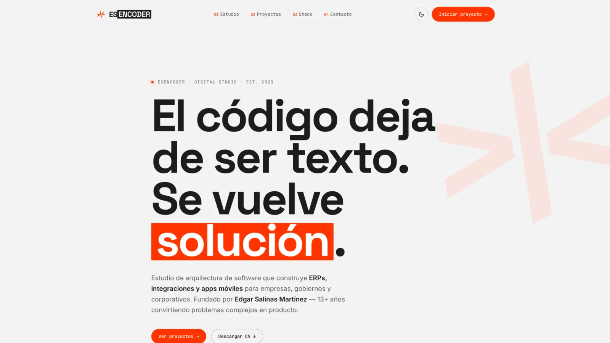
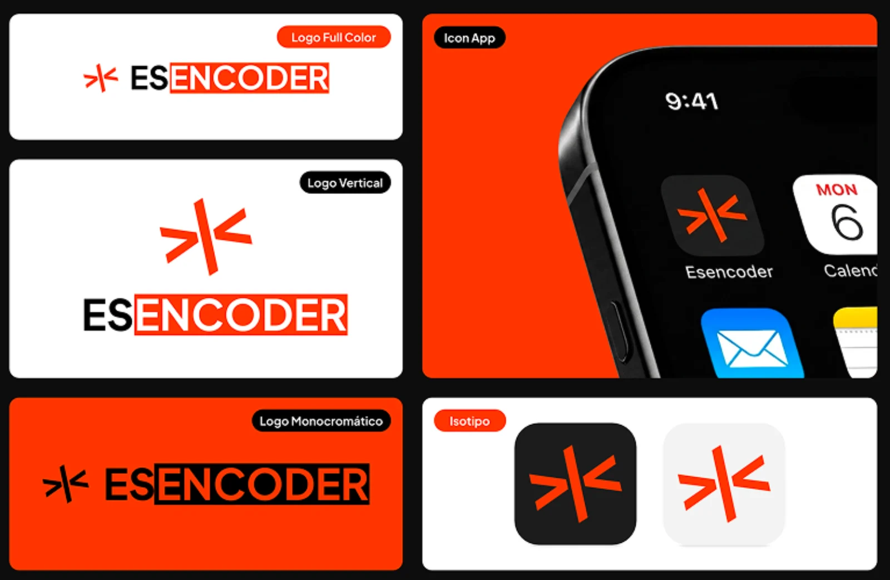
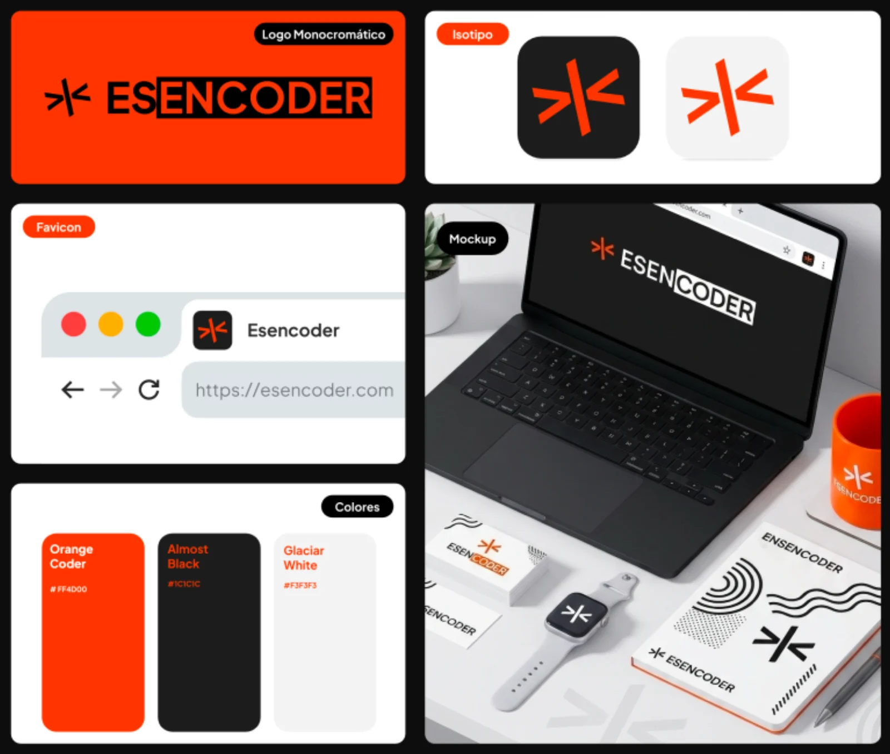
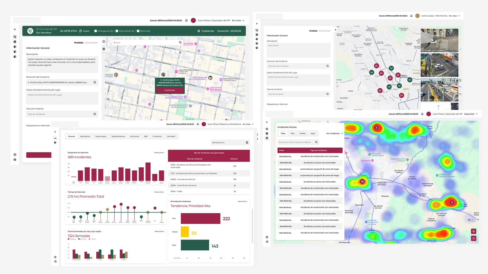
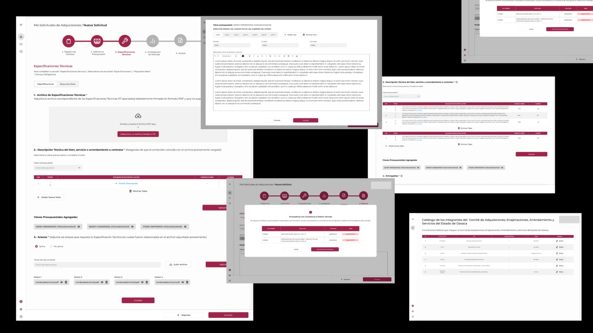
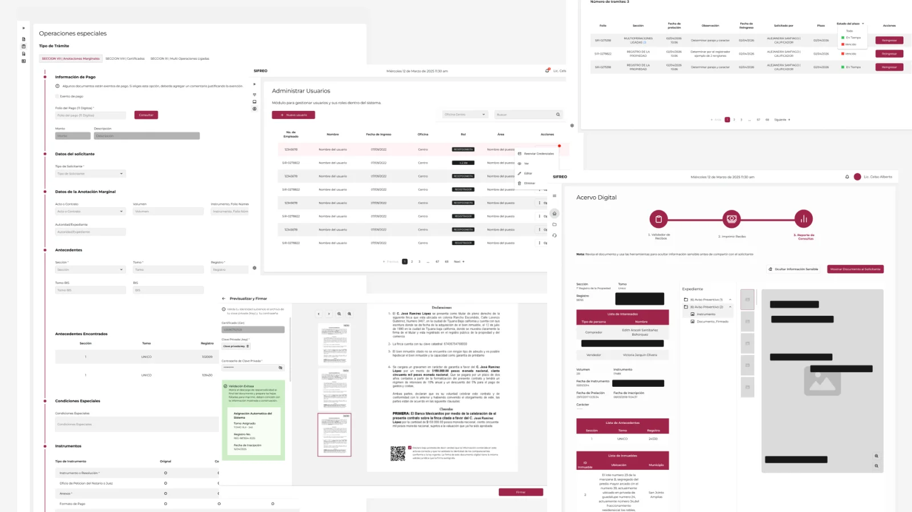
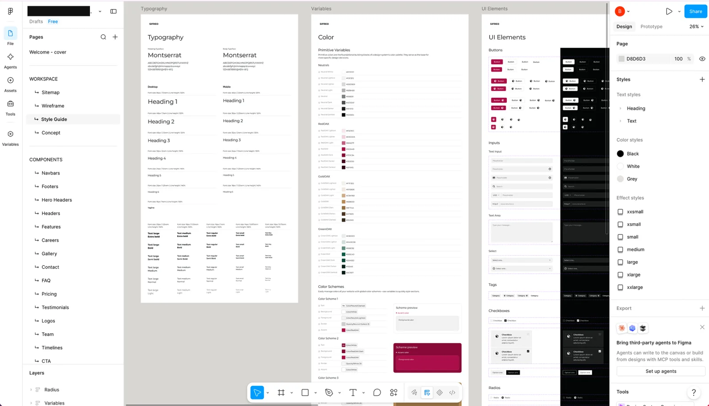

Esencoder Agency
Designing the identity for a software studio and a unified design system for three government platforms
Esencoder, a software studio with 13+ years of engineering, had an identity that no longer matched the quality of its work, and at the same time needed someone to own the UX of three complex government platforms.
As the sole designer I covered both fronts: I updated their brand identity with better practices and more character, and designed the three platforms on a single unified design system.
The refreshed identity is still in use today unchanged, and the three government systems share a consistent experience despite their complexity.

The client
Esencoder is a software architecture studio founded by Edgar Salinas Martínez, specializing in ERPs, integrations and mobile apps for enterprises and government. The studio had over thirteen years of engineering experience, but its visual identity no longer matched the quality of its work and it had no consolidated design practice. They needed both: a brand that matched the quality of their code, and a designer who could own the UX for a major government client.
My role
I was the sole designer, covering two very different scopes. First, I created Esencoder's brand identity from scratch: logo, visual system, and the website that's still live today. Second, I designed three complex government platforms, building a single design system that served all three products. I worked closely with the product managers, contributing to product decisions and helping define the direction of each project, not just the interfaces.
Esencoder's visual presence felt outdated. I refreshed the complete identity (logo, color system, typography, and the website) applying better practices and giving it more character. The goal was to position them as a serious, technical studio without losing personality.
The result landed well. The founder's reaction when he saw the new identity confirmed the direction was right, and the design has remained untouched since launch.


A state government in Mexico needed three digital systems built simultaneously. Each one solved a different problem, but all three shared the same users, the same organizational context, and the same need for clarity in complex workflows. I designed all three as sole designer and built a unified design system to keep them consistent.
01. Emergency call tracking and reporting
A system for monitoring and controlling emergency calls and incident reports. The interface integrated heat maps for geographic visualization, complex forms for data capture, data grids for case management, status tracking, and user access controls. The challenge was presenting dense operational data in a way that let operators act fast without missing critical information.

02. Budget request management
A platform for government agencies to submit, track and manage budget requests across departments. The system needed to handle multiple approval stages, document attachments, and status visibility for different user roles. I designed the flows to make a bureaucratic process feel navigable.

03. Official document digitization
The most structurally complex of the three. The government needed to migrate all traditional paper-based official documents (actas, certificates, permits) into a digital system, while simultaneously building a new platform that would digitize these processes from scratch. I designed both: the migration interface for existing documents and the new end-to-end digital workflows that would replace paper entirely.

The three platforms were developed in parallel for the same government client. Instead of designing each one independently, I built a single design system that served all three. Shared components (forms, grids, status indicators, navigation patterns, user management) were designed once and adapted per context. This gave the three products a consistent experience while allowing each one to handle its specific complexity.

Over the course of a year, working as a side project alongside my full-time role, I delivered:
A brand identity that positioned Esencoder as a credible studio. The website and visual system are still in use today, unchanged from the original design.
Three government platforms sharing a unified design system, each handling complex workflows (emergency operations, budget management, document digitization) with clarity and consistency.
A closer relationship with product management than a typical designer-agency dynamic. I wasn't handed specs to execute. I participated in defining what each product should be and how it should work.
Esencoder was the project that proved I could run a design practice independently. A year of work, three complex systems, one brand identity, and one design system, all as a side project. It taught me how to scope my own time, manage a client relationship directly, and make design decisions without a team to lean on. When every screen is yours, you learn fast what matters and what doesn't.